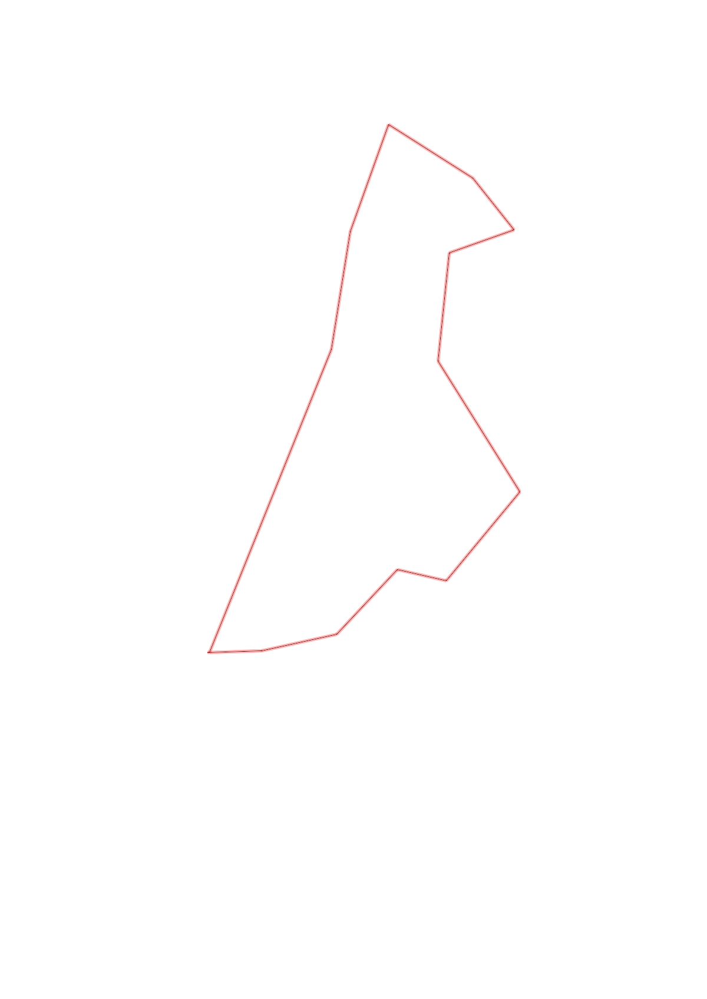
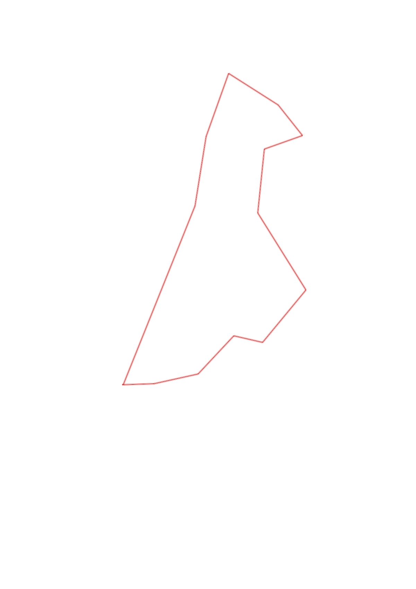

| Control |
Points |
Time Punched |
Distance |
Your Time |
Pace |
Place |
Fastest Time |
Median Time |
% Behind Fastest |
| 63 |
60 |
|
0.24 |
0:02:08 |
08:53 |
8 / 13 |
0:01:34 |
0:02:05 |
36% |
| 80 |
80 |
|
0.34 |
0:03:47 |
11:07 |
3 / 5 |
0:03:33 |
0:03:47 |
6% |
| 48 |
40 |
|
0.4 |
0:03:32 |
08:50 |
6 / 10 |
0:02:29 |
0:03:23 |
42% |
| 60 |
60 |
|
0.22 |
0:02:25 |
10:59 |
4 / 8 |
0:02:05 |
0:02:34 |
16% |
| 81 |
80 |
|
0.52 |
0:06:09 |
11:49 |
9 / 11 |
0:03:21 |
0:04:40 |
83% |
| 61 |
60 |
|
0.69 |
0:08:18 |
12:01 |
1 / 1 |
0:08:18 |
0:08:18 |
0% |
| 50 |
50 |
|
0.49 |
0:03:44 |
07:37 |
1 / 1 |
0:03:44 |
0:03:44 |
0% |
| 67 |
60 |
|
0.31 |
0:05:27 |
17:34 |
3 / 3 |
0:02:51 |
0:05:00 |
91% |
| 47 |
40 |
|
0.3 |
0:02:44 |
09:06 |
2 / 2 |
0:02:38 |
0:02:41 |
3% |
| 100 |
100 |
|
0.45 |
0:04:31 |
10:02 |
1 / 1 |
0:04:31 |
0:04:31 |
0% |
| 77 |
70 |
|
0.51 |
0:04:10 |
08:10 |
1 / 1 |
0:04:10 |
0:04:10 |
0% |
| 34 |
30 |
|
0.53 |
0:08:28 |
15:58 |
2 / 2 |
0:04:02 |
0:06:15 |
109% |
| Finish |
0 |
|
1.46 |
0:08:25 |
05:45 |
1 / 1 |
0:08:25 |
0:08:25 |
0% |
Total Distance Covered: 6.46km
Points Scored: 730
Late Penalty: -80
Final Score: 650
Total Time: 1hours 3minutes 48seconds
Efficiency: 100.62 points/km
 
